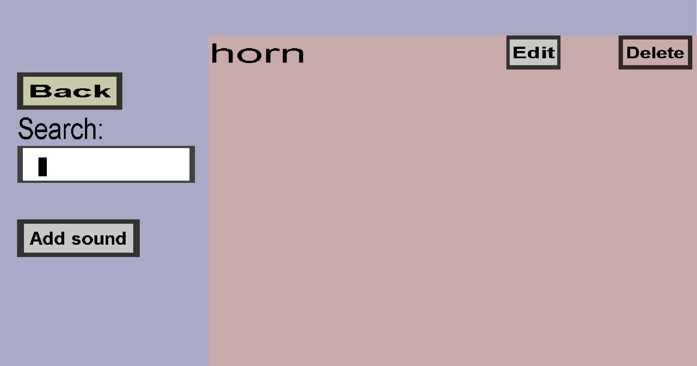

The sound type overview can be used to view and manage your collection of custom sound types
(.ogg files). If you have a single custom sound type called "horn", this menu should look like this:

-
The Back button will take you back to the edit menu.
-
If you have many sounds, you can use the Search field to search for a sound with a specific
name.
-
You can use the Add sound button to add a new custom sound type.
-
You can use the Edit button to edit the corresponding custom sound type.
-
You can use the Delete button to delete the corresponding custom sound type.